Фильтры
Ручные фильтры
1) Tours By Count List
class ToursByCountListView(generics.ListAPIView):
serializer_class = TourSerializer
pagination_class = CustomPagination
def get_queryset(self):
queryset = Tour.objects.all()
count = self.request.query_params.get('count')
if count:
queryset = queryset.filter(count=count)
return queryset
Фильтруем туры, где количество мест равно 5
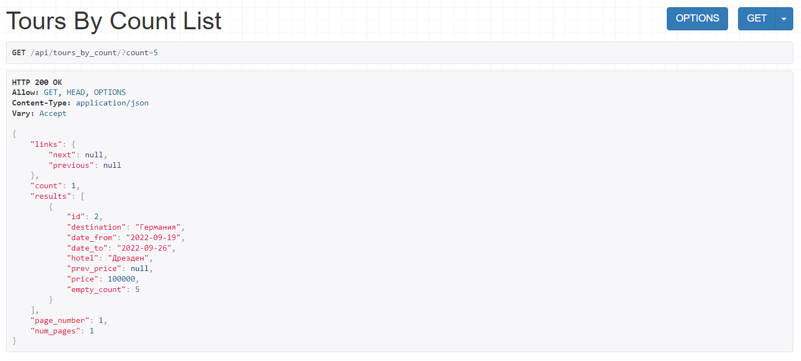
2) Tours By Count Destination List
class ToursByCountDestinationListView(generics.ListAPIView):
serializer_class = TourSerializer
def get_queryset(self):
queryset = Tour.objects.all()
count = self.request.query_params.get('count')
destination = self.request.query_params.get('destination')
if count and destination:
queryset = queryset.filter(count=count, destination=destination)
return queryset
Запрос с туром в Италию, где количество мест равно 19
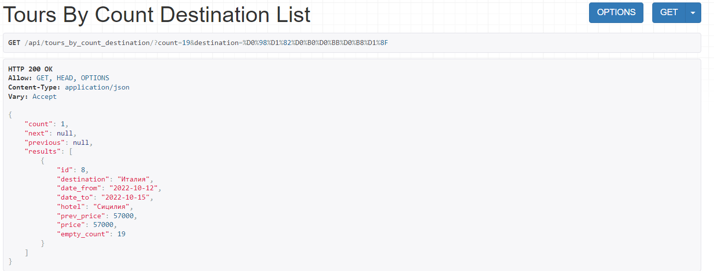
3) Reservations By Count Approved List
class ReservationsByCountApprovedListView(generics.ListAPIView):
serializer_class = ReservationReadSerializer
def get_queryset(self):
queryset = Reservation.objects.all()
user = self.request.user
if user.is_authenticated:
count = self.request.query_params.get('count')
approved = self.request.query_params.get('approved')
if count and approved:
queryset = queryset.filter(count=count, approved=approved)
return queryset
Поиск тура с подтвержденным бронированием на двух человек
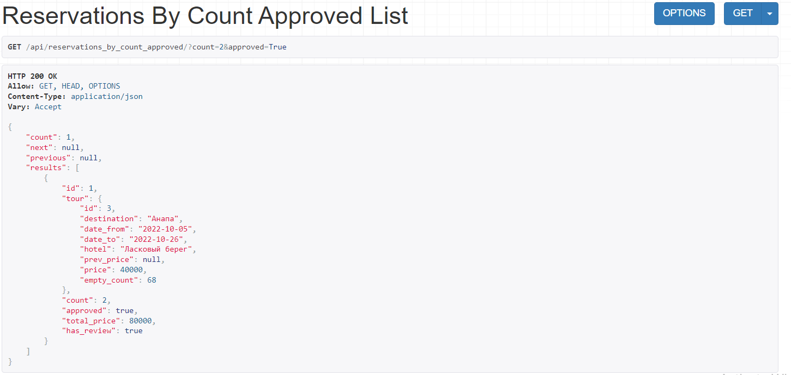
Автоматические фильтры
1) Reviews Ordered Filter
class ReviewsOrderedFilterView(generics.ListAPIView):
def get_queryset(self):
return Review.objects.filter(
# reservation__tour_id=self.request.query_params.tour
reservation__tour_id=self.kwargs.get('tour')
)
serializer_class = ReviewSerializer
filter_backends = (filters.OrderingFilter,)
filterset_fields = 'stars'
pagination_class = CustomPagination
Отзывы для тура с reservation__tour_id = 7 (Испания) 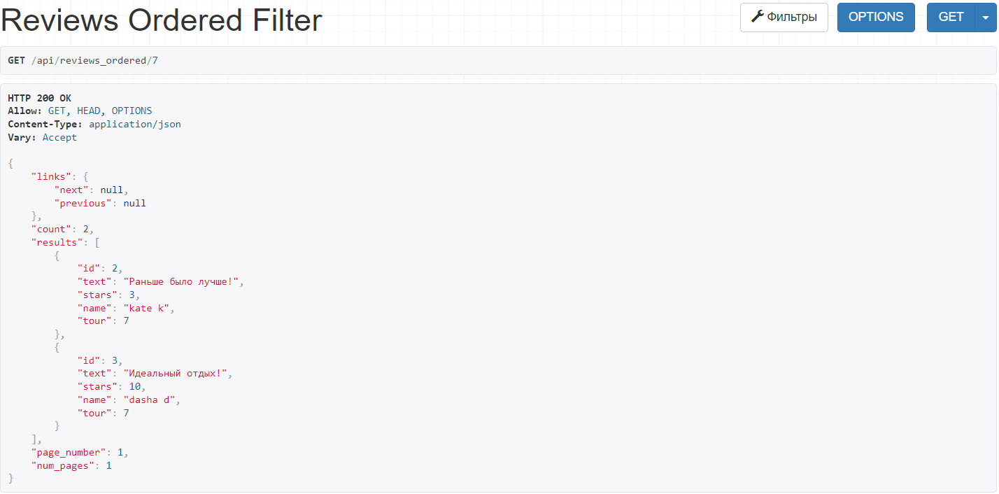
2) Reservations Search Filter View All
class ReservationsSearchFilterViewAll(generics.ListAPIView):
queryset = Reservation.objects.all()
serializer_class = ReservationReadSerializer
filter_backends = (filters.SearchFilter,)
pagination_class = CustomPagination
search_fields = ('count', 'tour__destination')
Тур в Испанию с бронью на 1 человека 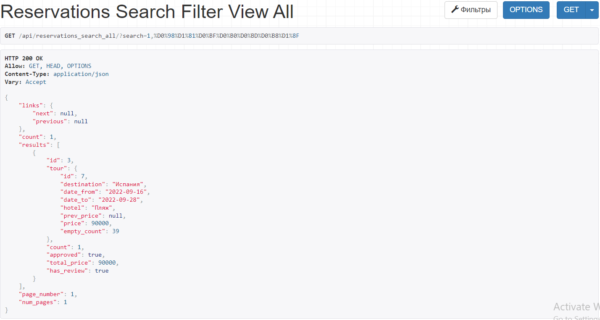
3) Tours Price Range Filter
class ToursPriceRangeFilterView(generics.ListAPIView):
queryset = Tour.objects.all()
serializer_class = TourSerializer
filterset_class = ToursPriceRangeFilter
pagination_class = CustomPagination
Фильтр по цене от 1000 до 60000 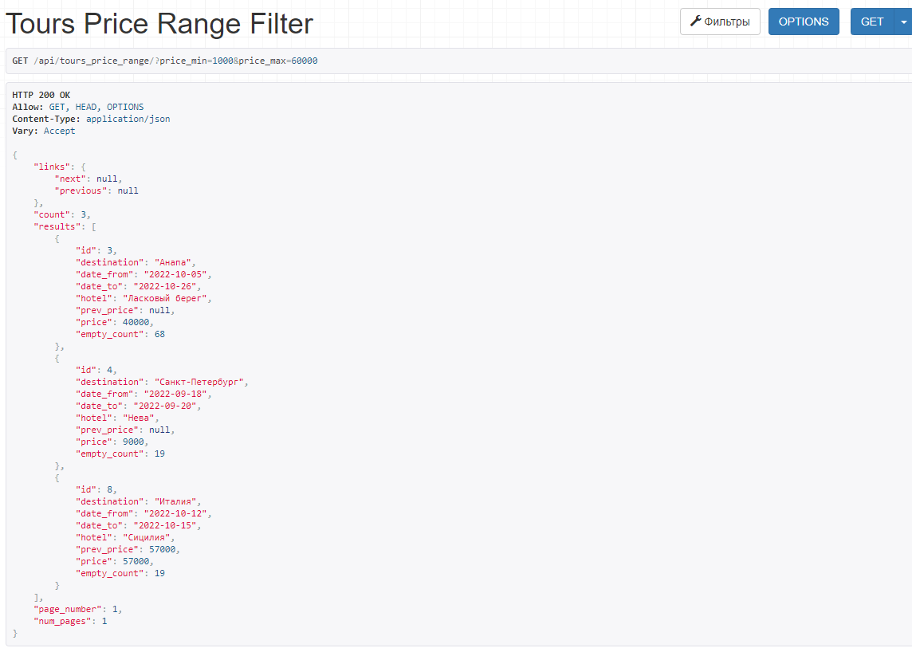
Загрузка файлов
В Django REST поддерживается загрузка только 1 файла
class ReviewPhoto(models.Model):
review = models.ForeignKey('Review',
on_delete=models.CASCADE,
related_name='review_photos')
file = models.FileField(
validators=[validate_file_size, validate_file_type],
upload_to=get_upload_path
)
file_name = models.CharField(max_length=100, blank=True, null=True)
file_size = models.IntegerField(blank=True, null=True)
def __str__(self):
return f'Photo in {str(self.review)}'
def save(self, *args, **kwargs):
self.file_name = self.file.name
self.file_size = self.file.size
super(ReviewPhoto, self).save(*args, **kwargs)
validators.py
from django.core.exceptions import ValidationError
import magic
def validate_file_size(file):
MAX_MB = 5
limit = MAX_MB * 1024 * 1024
if file.size > limit:
raise ValidationError(f'The file size is more than {MAX_MB} MB.')
def validate_file_type(file):
photo_extensions = ['image/png', 'image/jpeg', 'image/jpg']
content_type = magic.from_buffer(file.read(), mime=True)
if content_type not in photo_extensions:
raise ValidationError(f'Files of type {content_type} are not supported.')
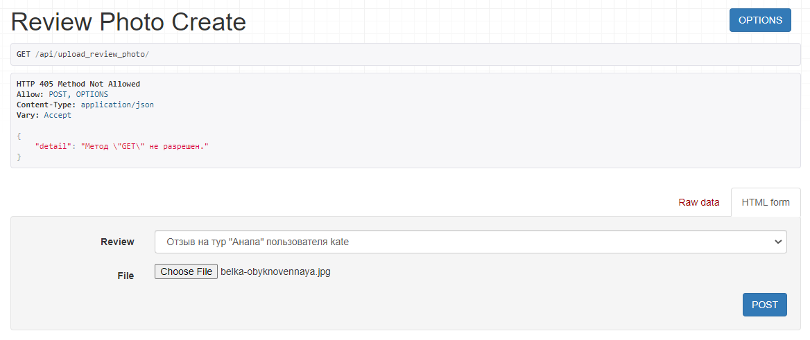
Результат:
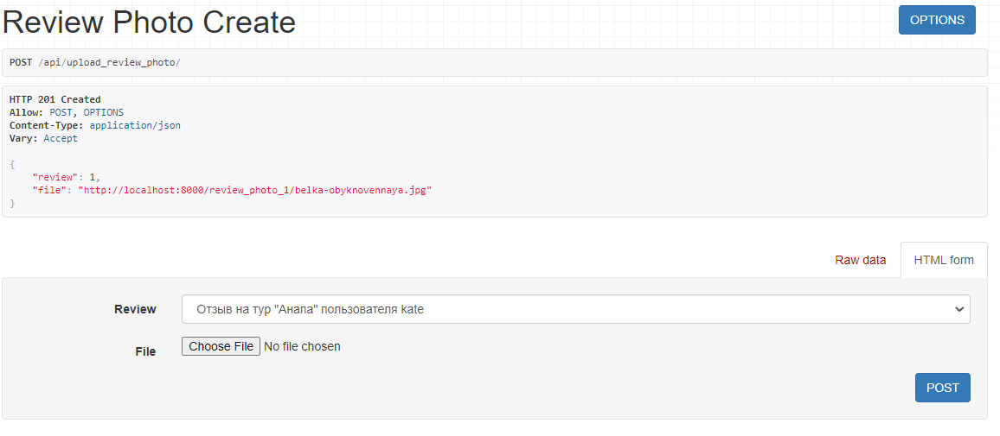
Для загрузки нескольких файлов воспользуемся Postman
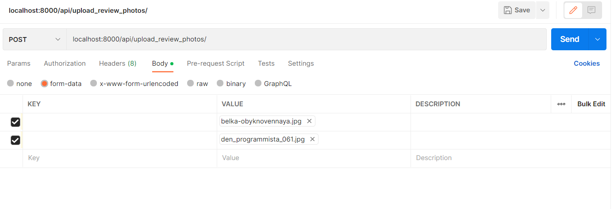
Результат:
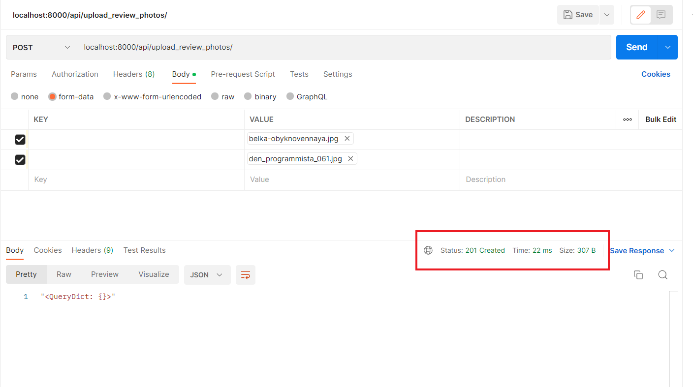
Пагинация
При увеличении диапазона цены до 500000 видим пагинацию 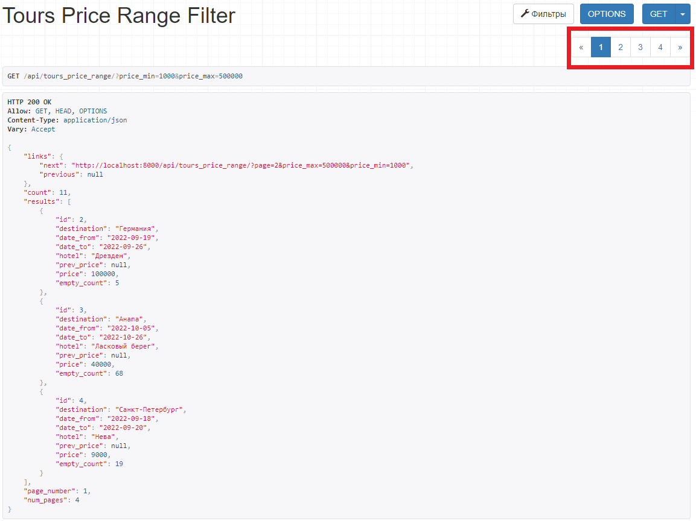
Настройки пагинации в settings.py
REST_FRAMEWORK = {
'DEFAULT_FILTER_BACKENDS':
['django_filters.rest_framework.DjangoFilterBackend'],
'DEFAULT_PAGINATION_CLASS':
'rest_framework.pagination.PageNumberPagination',
'PAGE_SIZE': 3,
"DEFAULT_AUTHENTICATION_CLASSES": (
"rest_framework_simplejwt.authentication.JWTAuthentication",
"rest_framework.authentication.BasicAuthentication",
"rest_framework.authentication.SessionAuthentication"
),
}
Сигналы
Реализовать 3 сигнала, которые:
- Вызывает логику, во время создания экземпляра объекта.
- Сохраняет значения выбранных полей в таблице в специальные поля для хранения предыдущих значений при обновлении объекта.
- При удалении объекта записывает информацию об удалении в лог реализованный любым образом.
1) Сигнал на создание тура
@receiver(post_save, sender=Tour)
def create_tour(sender, instance, created, **kwargs):
if created:
print(f'\n{instance} создан!')
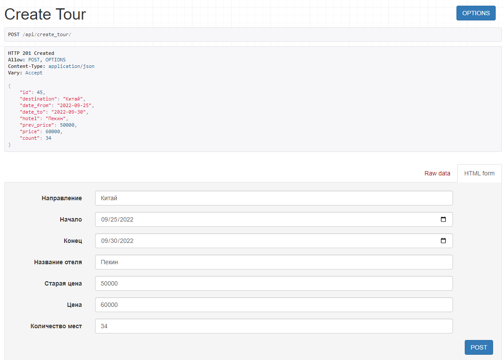
Сигнал сработал
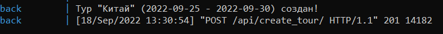
2) Сигнал на обновление стоимости тура
@receiver(pre_save, sender=Tour)
def update_tour_price(sender, instance, **kwargs):
try:
prev_instance = Tour.objects.get(id=instance.id)
instance.prev_price = prev_instance.price
print(f'Цена обновлена: {instance}\n'
f'стоил: {instance.prev_price},\n'
f'а теперь стоит: {instance.price}\n')
except ObjectDoesNotExist:
pass
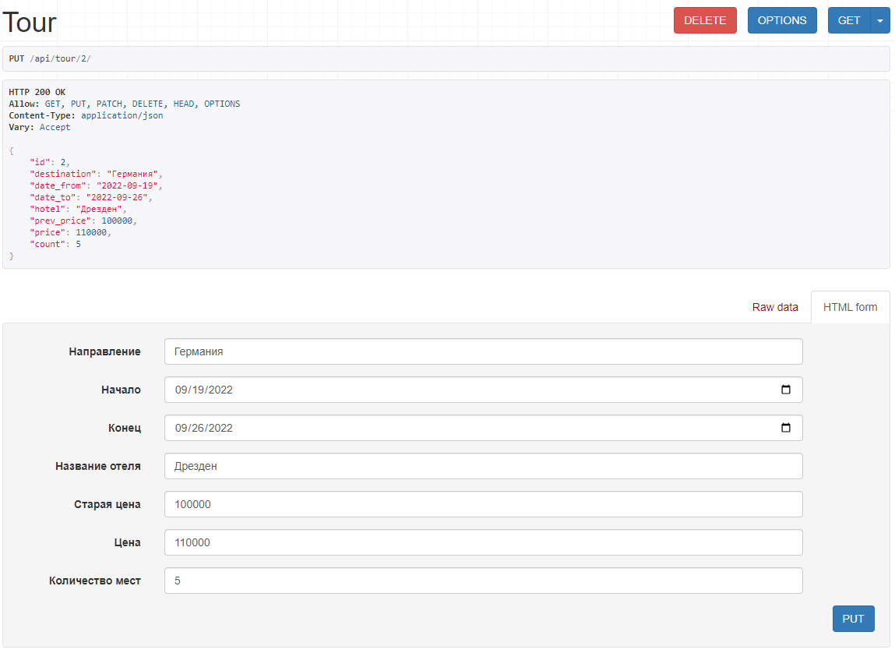
Сигнал сработал
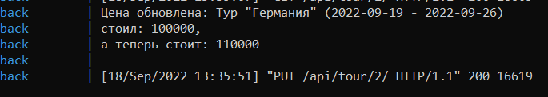
3) Сигнал на удаление тура
@receiver(pre_delete, sender=Tour)
def delete_tour(sender, instance, **kwargs):
with open('deleted_log.txt', 'a') as f:
f.write(f'Тур {instance} удален\n')
Запись в логах после удаления
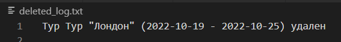
Статус 200, удаление прошло успешно
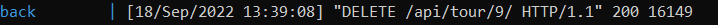